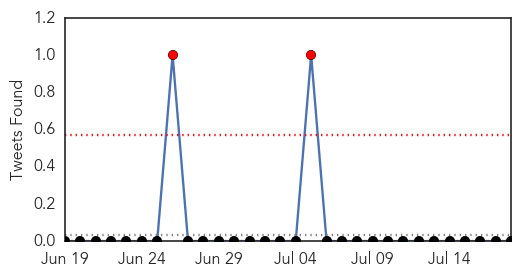
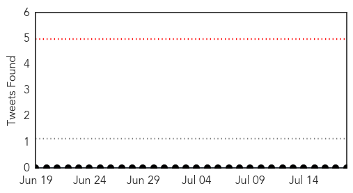

Dengue Fever
30-Day Web Trend
6 alerts, 3 warnings

30-Day Twitter Trend
3 alerts, 0 warnings

Article Locations

Article Confidences

Top Articles:
- 0.992
- Health Ministry calls for public to help prevent spread of dengue fever - Myanmar
- 0.987
- Myanmar: Health Ministry calls for public to help prevent spread of dengue fever
- 0.882
- Of 93 Percentage Victims only 1 Percentage aware of Dengue
- 0.856
- ‘Sibu base for state task force to fight dengue menace’ – BorneoPost Online
- 0.849
- AIIMS wants to check drop in platelets as dengue returns
- 0.823
- 4 mosquito bite prevention tips
- 0.609
- Rheumatoid Arthritis Neck And Shoulder Pain California Ventura
- 0.565
- JP Nadda pays surprise visit to Safdarjung Hospital, reviews Dengue preparedness
Top Tweets:
-
No tweets found for Jul 18, 2015
MERS
30-Day Web Trend
0 alerts, 0 warnings

30-Day Twitter Trend
0 alerts, 0 warnings

Article Locations
Article Confidences

Top Articles:
Top Tweets:
-
No tweets found for Jul 18, 2015